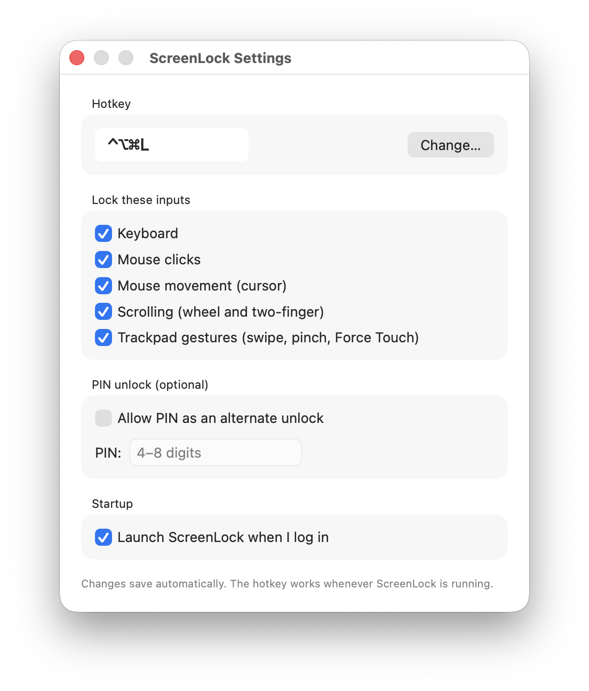
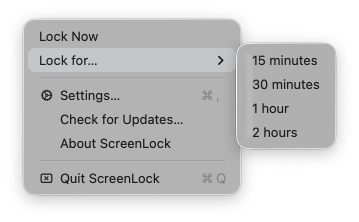

Keep YouTube, Zoom, presentations, and dashboards running while keyboard, mouse, and trackpad are completely locked. Press a hotkey or type a PIN to unlock — in one second.


YouTube Kids keeps playing. Your spreadsheet stays untouched. Your unread emails stay unsent.
Lock input mid-stream without minimizing OBS. Your chat stays visible, your scene stays live.
A screen they can see, a Mac they can't break. Retail demos, signage, museum displays.
Keep the slides live, lock the controls during Q&A. No accidental clicks, no broken flow.
Keyboard, mouse clicks, mouse movement, scrolling, and trackpad gestures — toggle each separately.
Default is ⌃⌥⌘L. Change it to anything that fits your fingers.
Set a 4–8 digit PIN. Type it on the keyboard while locked — the digits stay invisible. Kids can watch you press the hotkey, but they can't see your PIN.
Lock for 15, 30, 60, or 120 minutes and walk away. Unlocks itself when you're back.
No Dock icon, no Cmd-Tab footprint, no Electron. Just a tiny lock in your menu bar.
No analytics, no network calls, no accounts. Settings stay on your Mac. Period.
Or click Lock for… in the menu bar and pick a duration.
Your screen keeps doing exactly what it was. Keyboard, mouse, trackpad, gestures — nothing reaches any app.
Instant unlock. No password screen, no app switching, no interruption.
$9.99 one-time. macOS 12 or later. Free updates within v1. Refund within 14 days if it isn't for you.
Code-signed and notarized by KERIGAMI LLC. Verified by Apple on every launch.
macOS requires Accessibility access for any app that intercepts input — that's how keyboards and mice get blocked. ScreenLock uses only that permission and nothing else.
Input is restored automatically. The lock is software-only — if ScreenLock isn't running, nothing is blocked. The same is true if you force-quit it.
No. Every key press and click is intercepted by macOS before it reaches any app. Mashing won't drift into your PIN either — the buffer resets on any non-digit press or 5 seconds of idle.
macOS 12 Monterey and later (including Sequoia and Tahoe). Apple Silicon and Intel.
Your hotkey always works as the primary unlock. Or click the ScreenLock menu in the menu bar (when unlocked) to change the PIN.
Yes. The lock applies to input from your keyboard, mouse, and trackpad — independent of which screen the cursor is on.
Not planned. ScreenLock is built on macOS-specific APIs (CGEventTap) that don't have direct equivalents on other platforms.